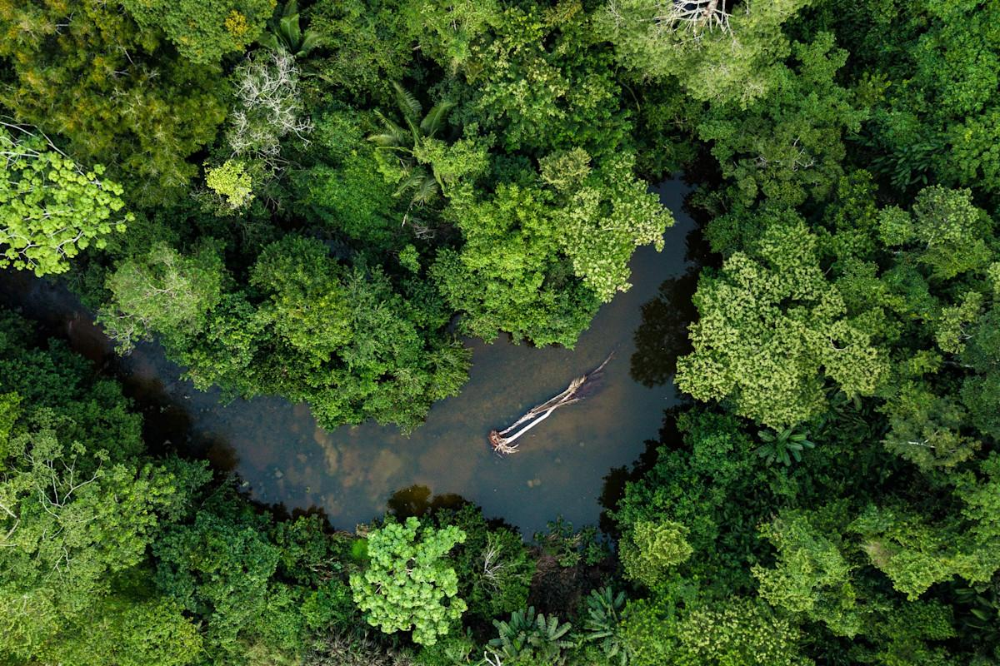
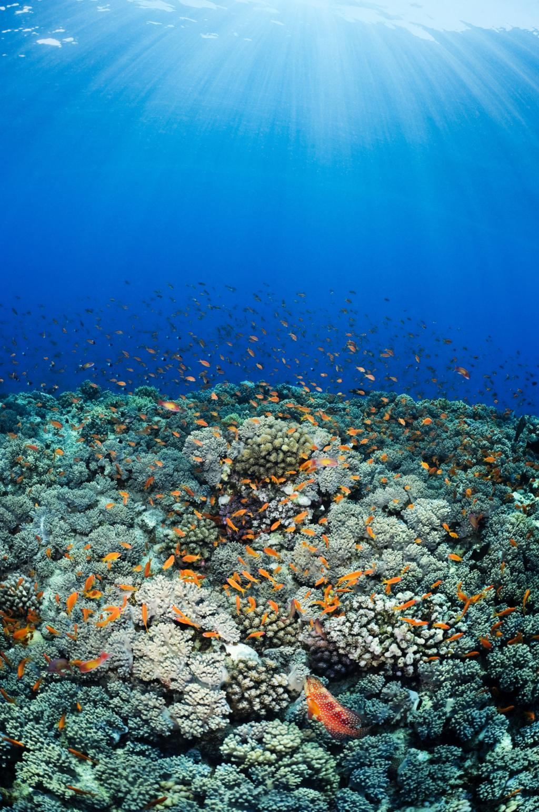
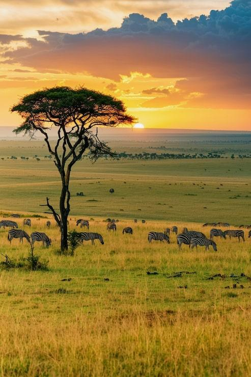
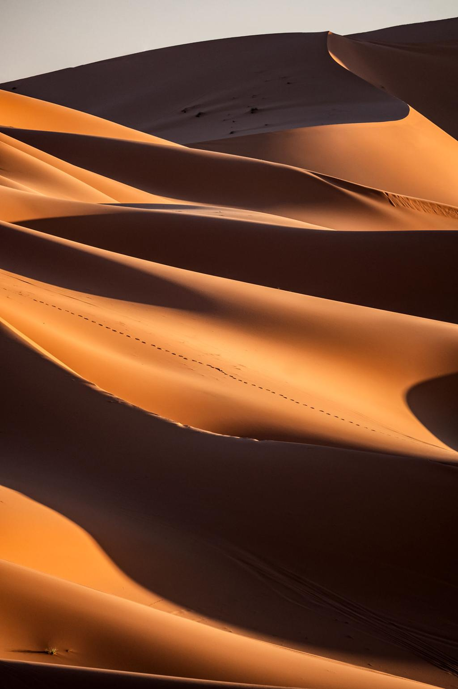
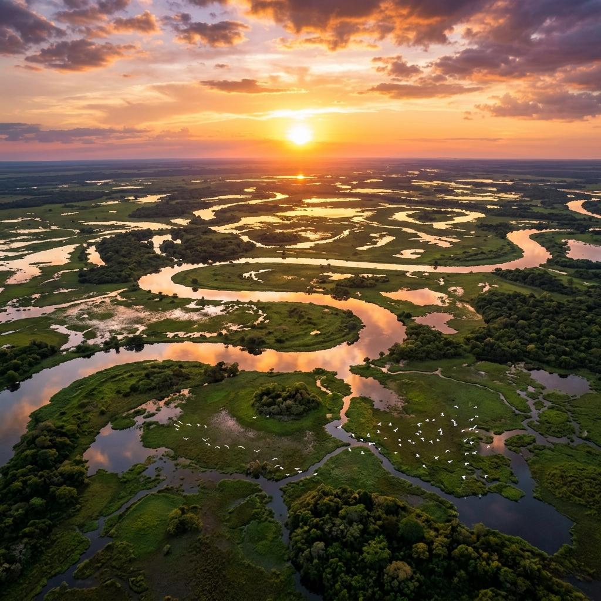
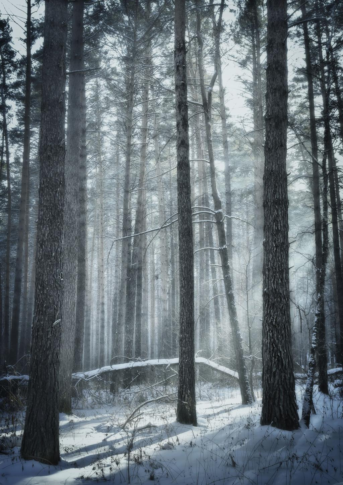
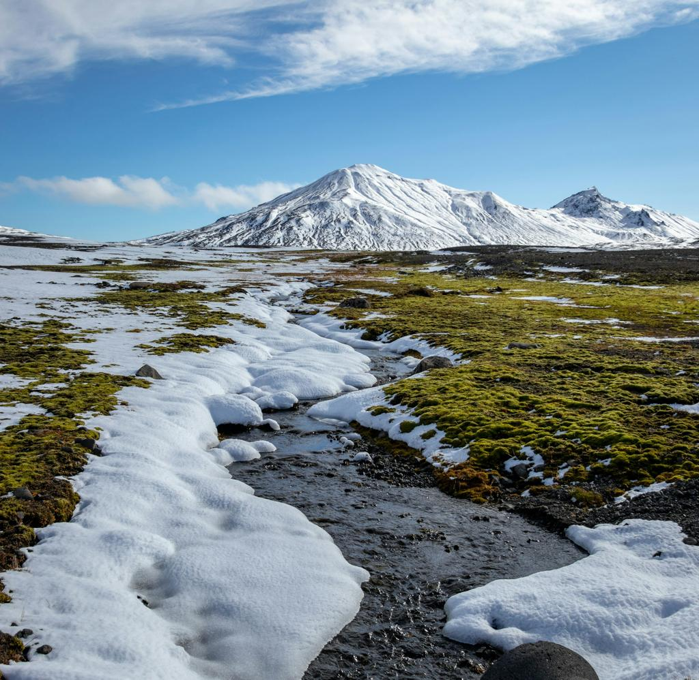

A plataforma global para registrar, monitorar e proteger a biodiversidade. Cada observação fortalece a ciência e aproxima pessoas da natureza.
Fotografe espécies e contribua para um banco global de biodiversidade.
Visualize observações em um mapa interativo com localização precisa.
Construa conhecimento sobre fauna e flora através de dados organizados.
Veja registros distribuídos pelos biomas do planeta.
A biodiversidade não tem fronteiras. O ARKA conecta observações dos principais ecossistemas da Terra.

Amazônia, Congo e Sudeste Asiático.

Recifes, mar aberto e regiões costeiras.

África, Cerrado e Llanos.

Saara, Atacama e Gobi.

Pantanal, Everglades e Delta do Okavango.

Canadá, Alasca, Escandinávia e Sibéria.

Ártico, Antártica e montanhas alpinas.